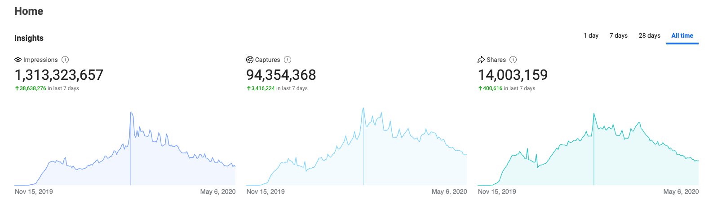

Spark AR: Instagram Face filters
The beginning of the Spark AR projector was because I just wanted to have a film camera filter in the style I wanted, but It was really rare to find a good one that satisfied my need. So I decided to create one for myself then. Obviously, The first Instagram camera filter that I was made was a film tone camera filter. After the first filter published, I felt so much fun during creation process then I began to extend to various types of face filter styles such as face make up filter, face tracking filter, and particle system. It ended up I had 11 filters total in my account now.
At the beginning of making camera filters and publishing them on instagram for people to use, I didn’t care about it that much, just wanted to share my works and ideas and see others happy using my stuffs but it turns out that after being released, more and more people are using it. The unexpected thing is the the number of followers on my account increased dramatically. My follower has grown from 800 to 25,000 in 6 months and still continue to increase continuously. I didn’t really focus on the number of followers at the first place, so this is a lot more than expected. Considered as another lesson learn to know that making filters is not just for fun, but it can also be rewarded or extended.
All time statistics of my face filters *updated on 05/07/2020
Back in a couple of months ago, I had an opportunity to make a commercial face filter for my friends Milk Tea shop. It was another fun project, 3 face filters for them and It turned out people loved it! Those 3 face filters contain 2 types of face filters and the last one is emitted the particle system. Check out their profile and filter @Chabar.bkk
What I learned Hello worlds
- Spark AR software: Obviously, If I want to develop and publish face filter I need to know how to use Spark AR software which is belonged to Facebook.
- Adobe Photoshop: Basically, most of the assets I used in Spark AR, I created, edited, and developed in Photoshop. From person who known just a little bit of Photoshop, My PS skill is a lot more fluent now.
- Javascipt: In Spark AR, If you want to create Native menu or any advance stuffs, it is necessary to write javascript because some features don’t have UI or drag&drop function.